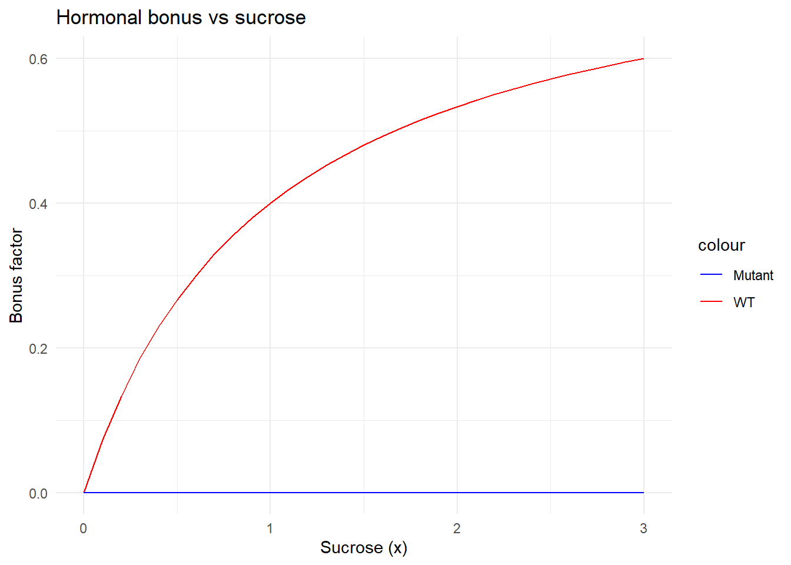
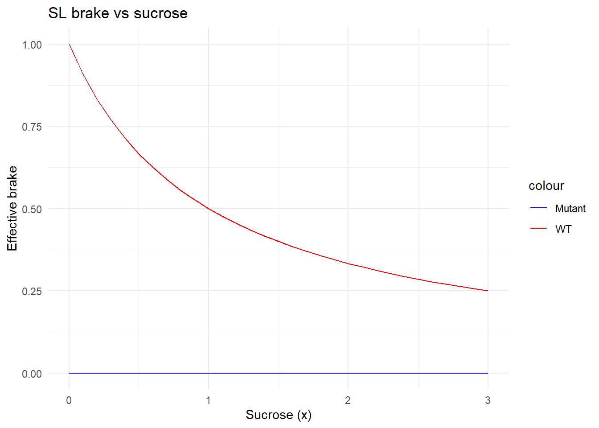

In this G×E extension of PSoup, we aim to represent how sucrose (\(SUC\)) interacts with the strigolactone pathway (\(SL\)) to determine bud outgrowth.
This model introduces a new internal variable:
\[
mSL\_pathway\_intact \in [0,1]
\] which defines how functional the SL signaling is (1 = WT, 0 = mutant).
The Bud_release node integrates promotive and repressive influences:
\[ \text{Bud\_release} = \frac{2 \cdot \text{growth\_drive}} {1 + \text{ABA\_brake} + \text{SL\_brake\_effective}} \]
\[ \text{growth\_drive} = \left( \frac{SUC + CK}{2} \right) \times (1 + \text{hormonal\_bonus}) \]
The first term \(\frac{SUC + CK}{2}\) represents the carbon–cytokinin base drive, available to all genotypes.
The second term introduces the hormonal bonus due to sucrose when the SL pathway is intact.
\[ \text{hormonal\_bonus} = b \times \text{intact} \times \frac{SUC}{1 + SUC} \]
where: - \(b = 0.8\) : bonus strength coefficient
- intact = \(mSL\_pathway\_intact\) (1 for WT, 0 for mutant)
Hence: - WT receives an additional sucrose-driven “boost” up to +80% as \(SUC\) increases. - SL-pathway mutants receive none (the pathway is broken).
\[ \text{ABA\_brake} = \frac{ABA + BRC1\_2}{2} \]
This term captures hormonal repression by abscisic acid and BRC1, unchanged from the original PSoup.
\[ \text{SL\_brake\_effective} = SL_{base} \times \text{intact} \times \left(1 - \frac{SUC}{1 + SUC}\right) \]
where \(SL_{base} = mPerception\_SL\).
By substitution:
\[ \boxed{ B = \frac{ (SUC + CK) \, [1 + b \, I \, \frac{SUC}{1 + SUC}] }{ 1 + ABA + BRC1\_2 + SL_{base} \, I \, (1 - \frac{SUC}{1 + SUC}) } } \]
where \(I = mSL\_pathway\_intact \in \{0, 1\}\).
| Component | WT (\(I=1\)) | SL mutant (\(I=0\)) | Biological role |
|---|---|---|---|
| Base drive | ✓ | ✓ | Carbon and cytokinin supply |
| Hormonal bonus | ✓ (sucrose-responsive) | ✗ (absent) | Sucrose-induced hormonal release |
| SL brake | ✓ (relieved by sucrose) | ✗ (absent) | SL inhibition |
| ABA brake | ✓ | ✓ | Common inhibition |
Outcome
- WT: low \(SUC\) → strong brake, weak drive → low growth
high \(SUC\) → brake lifted, bonus strong → large growth
- Mutant: brake already off, no bonus → moderate, flat response
Below, we plot the response of each term to sucrose (0–3×), for WT (intact=1) and mutant (intact=0).